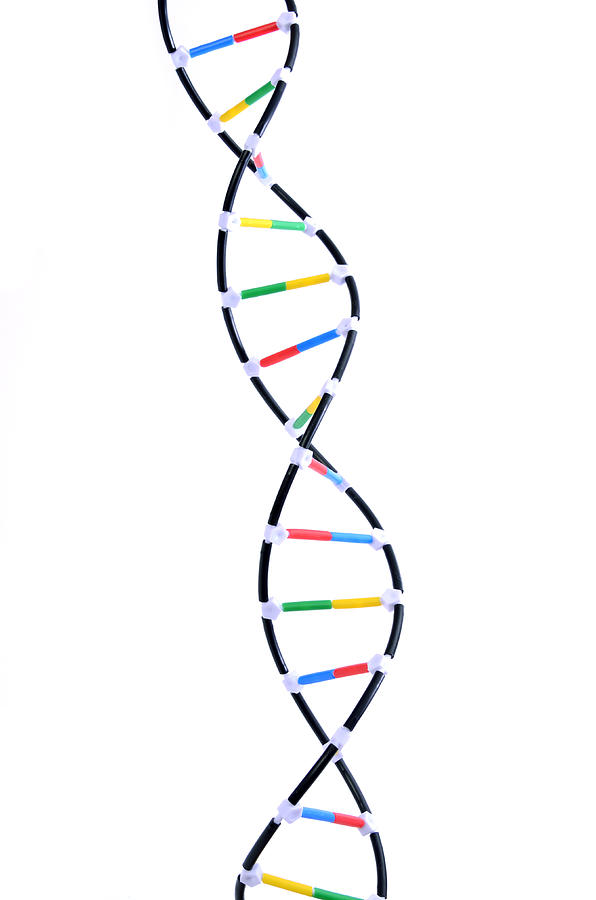
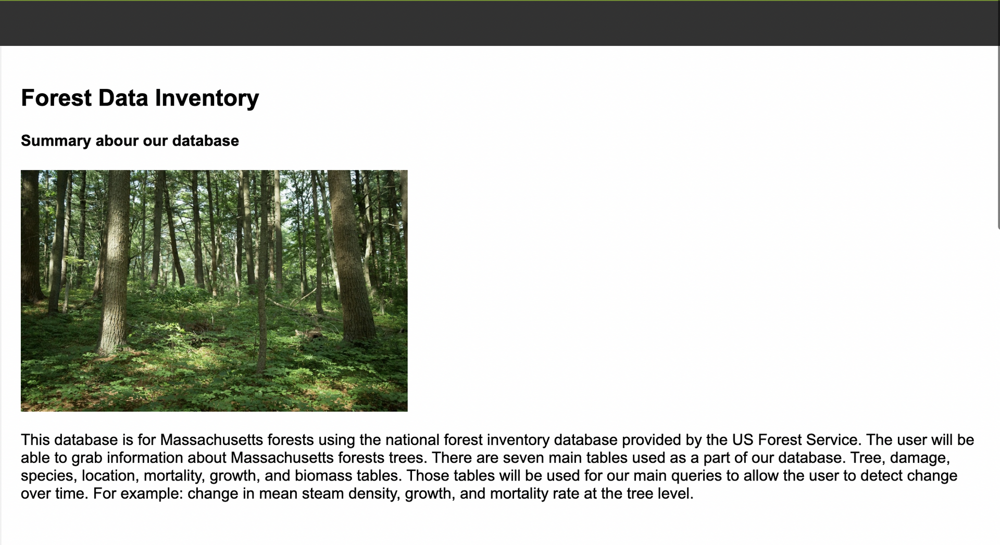
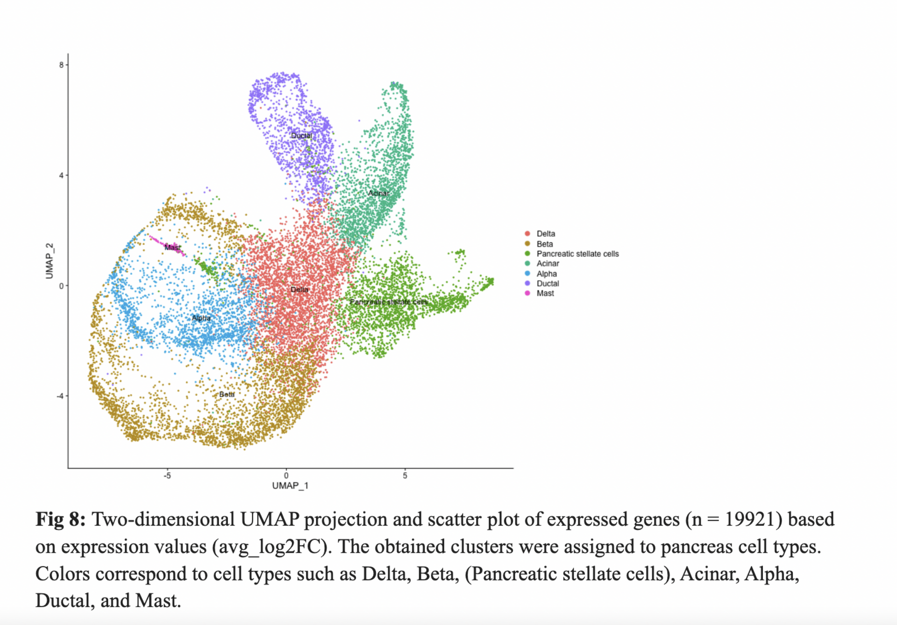
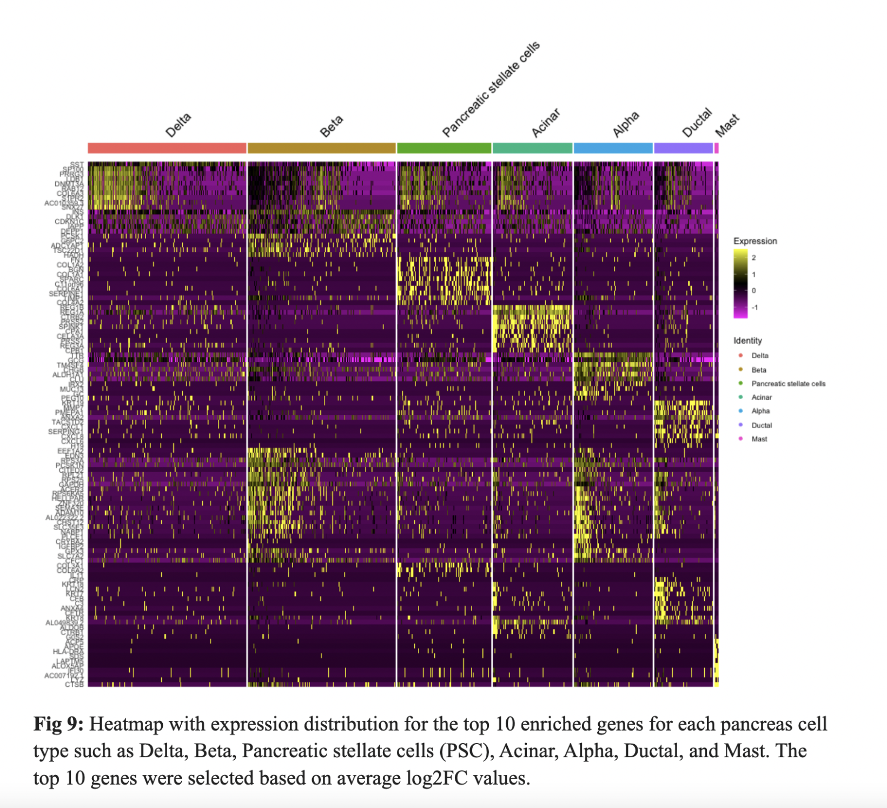
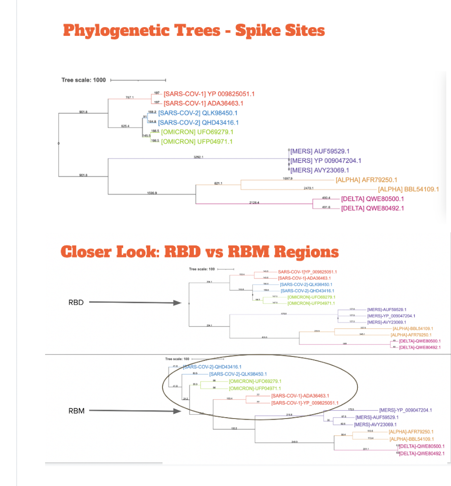

Click the 'plus' button to expand the section and learn more about each project.

This RShiny app attempts to summarize RNASeq bioinformatics studies and processes into multiple tabs. Given metadata, raw count, differential expression, and gene enrichment data, the website will process it and return a series of analyses and graphs. This website displays four pages including:
- Samples Tab
- Counts Tab
- DeSeq Tab
- FGSEA Tab
Click here to go to the RShiny APp
Check out the project github repo

This page aims to help professors at BU by providing an updated forest inventory database. The main goal of this website is to allow users to query the database and provide insights into possible analyses to help centennial scale projections of forest response to environmental change over time and better estimate terrestrial ecosystem models. This database and user interactive webpage was implemented in SQL, HTML, jquery, and JS; and was developed as a project at Boston University as part of the BF768 course, Spring 2022.
Click here to go the website
Check out the project github repo

This project attempts to replicate findings from Baron et al., 2016 by processing the barcode reads of a single cell sequencing dataset, performing cell-by-gene quantification of UMI counts and perform quality control on a UMI counts matrix to ascribe biological meaning to the clustered cell types and identify novel marker genes associated with them. My role as the analyst was to analyze the UMI counts to identify clusters and marker genes for distinct cell type populations using the Suerat package in R. was developed as a project at Boston University as part of the BF528 Application in Bioinformatics course, Spring 2022.


Check out the project github repo
This project includes a anticipated mutational drift script that determines the next variant for Covid19. It uses the RBM region of UFP04971.1[OMICRON] as a base and mutates it based off literature and liklehood probability of mutating. This could be used by scientist to create a vaccine that anticipates mutations and evolves with virus. The vaccine should focus on the rbm regions due to high variability and significance of transmissibility in this region. Below there is a series of phylogenetic trees representing the multi-sequence alignment between the spike protein region, RBD region, and the RBM region. The RBD region shares a similar relationship to the spike protein phylogenetic tree. However,the OMICRON RBM region diverges to form a clade on its own.
Check out the project github repo

My colleagues and I reproduce the results from Figure 2a and Figure 3b+c, as well as compare the pathway enrichment results reported in the Wang et al, 2014 paper. We began by choosing a subset of the samples, termed toxgroups, to analyze. There are sets of samples corresponding to RNA-Seq and microarray data for each toxgroup. We implemented a different analytical pipeline for the RNA-Seq data using current methodologies. My role as a programmer was to perform differential expression analysis on RNA-Seq data using the DESeq2 package in R. This project was developed as a project at Boston University as part of the BF528 Application in Bioinformatics course, Spring 2022.
Check out the project github repo
The BU Neuromics Lab is working towards building a database that stores a myriad of data types such as genomic modalities, clinical data and subject information from the PTSD Brain Bank repository. The PTSD Brain Bank is led by Veterans Affair National Center for PTSD which stores brain tissue samples from particpants who were diagnosed with PTSD and Alzheimer’s disease (Friedman et al., 2017). Their ultimate goal is to answer the question of how stress impacts brain functioning. I worked with the BU Neuromics Lab to help build a database infrastructure to store genomic and clinical information using a Neo4j database platform on a CentOS VM server. I used a practice large scale data set from the GTEx repository. The purpose of this database is to help researchers process and retrieve clinical and high-throughput sequencing data. I implemented data loading, query, and web framekwork scripts using Cypher, Python, Unix, and Flask API.
Check out the project github repo